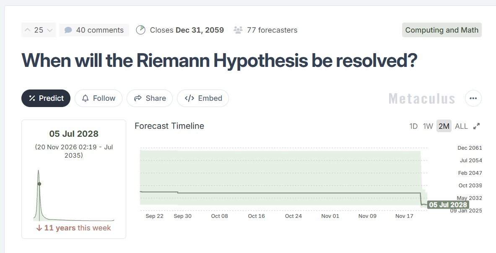
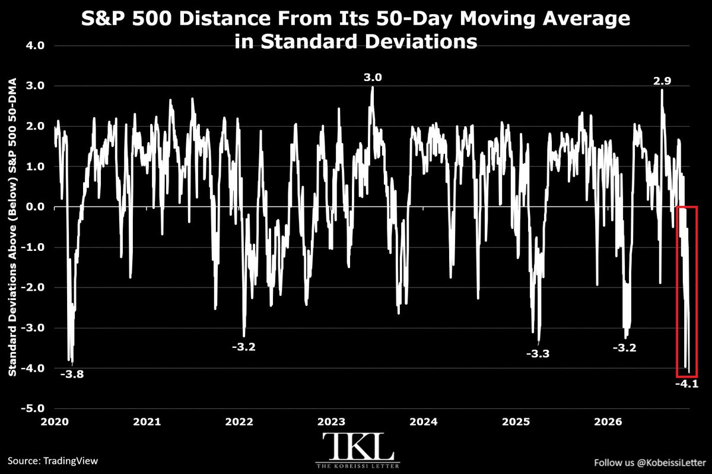
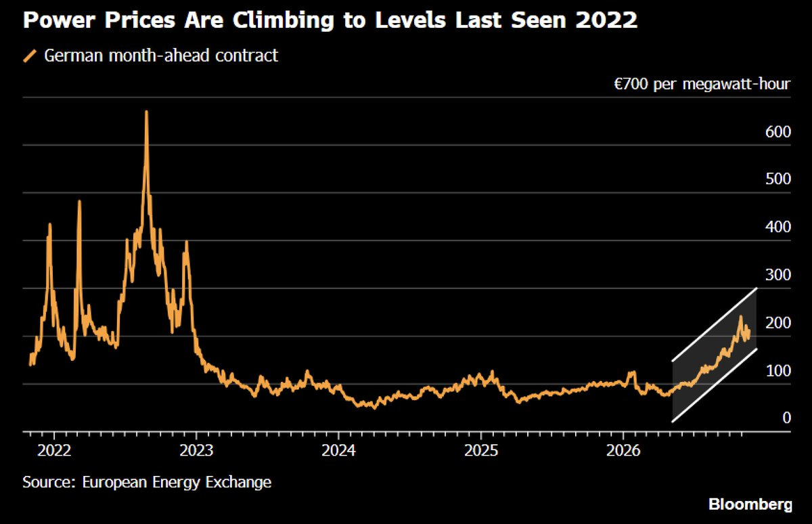

Lean certifica in un giorno i 17 milioni di righe della dimostrazione di Riemann, Wall Street finisce a 4,1 sigma sotto la media, Colgate intervista clienti che non esistono e la COP31 diventa la più lunga di sempre
Brief di domenica 22 novembre 2026 · lista X «Best» · 110 post da 36 account, dalle 13:30 del 21/11 alle 13:30 del 22/11 (ora di Roma)
🌈 Per ogni giovane matematico l'ipotesi di Riemann era la pentola d'oro in fondo all'arcobaleno. Sabato la comunità Lean ha certificato che l'oro c'è davvero, e Tim Urban si è chiesto cosa resti da sognare adesso. Nelle stesse ore la Borsa americana guardava i suoi grafici con la faccia di chi l'oro l'ha perso, mentre in Germania le fabbriche con gli ordini pieni spegnevano le macchine perché la corrente costa troppo.
Ieri ne parlavamo con il condizionale, oggi un po' meno. Il 20 novembre Levent Alpöge ha pubblicato la dimostrazione come libreria Lean da 17 milioni di righe di codice; in un giorno la Lean FRO e la Mathlib Initiative l'hanno verificata e firmato una dichiarazione congiunta che la certifica come corretta. Il metodo conta quanto il risultato: a differenza dei 377 risultati che OpenAI ha diffuso a ottobre, quasi tutti nati da un prompt semplice, qui l'esperienza di Alpöge ha guidato una lunga serie di tentativi con Claude. Ethan Mollick lo dice chiaro: chi sta dimostrando i problemi del Millennio è sempre un grande matematico, i modelli da soli non ci arrivano (ancora).
Le previsioni, intanto, sono state travolte. Il mese scorso, dopo Navier-Stokes, Metaculus metteva Riemann a maggio 2035, i superforecaster di LEAP davano il 10% a un altro problema del Millennio risolto nel 2026 e Terence Tao parlava di «umani e AI insieme, nel 2050 o giù di lì». Mollick precisa che nessuno vuole prendere in giro gli esperti, ma il segnale resta: anche i migliori continuano a sottostimare l'AI. Polymarket ci ha fatto la battuta del giorno, «la matematica sarà risolta in meno di 70 giorni al ritmo attuale», rilanciata da Azeem Azhar.

Resta la parte emotiva, che Tim Urban ha messo in scena meglio di chiunque altro:
x.com/waitbutwhy/status/2124222198101737685
Dwarkesh Patel ha ripescato la domanda che a giugno aveva fatto a Grant Sanderson di 3Blue1Brown: se un'AI risolvesse Riemann, quanto ne guadagnerebbe la comprensione umana della matematica? Ejaaz trova «imbarazzante» la diffidenza dei matematici: calcolatrici e computer sono sempre stati strumenti per spingersi nell'ignoto. Paul Graham la chiude in cinque parole, «AI will Wallace every Darwin»: come Wallace arrivò alla selezione naturale in parallelo a Darwin, l'AI arriverà accanto a ogni genio (almeno, io la leggo così). L'uomo collo di bottiglia, insomma, di cui parlavamo con AlphaZero (⚠️ ff.48.4 I limiti (matematici) di ChatGPT).
La settimana si è chiusa con numeri da manuale di storia. L'S&P 500 ha chiuso 4,1 deviazioni standard sotto la sua media a 50 giorni, la distanza più ampia da agosto 2015: nel 2008 il massimo era stato 3,6, nel crollo Covid 3,8. L'indice Fear & Greed è sceso a 9,7, sotto 10 per la prima volta da marzo, e il VIX ha fatto il quinto balzo settimanale di sempre, dietro solo a ottobre 2008, Liberation Day, Covid e Flash Crash. Kobeissi ricorda che le ultime tre volte sotto quota 10 l'S&P ha poi recuperato in media il 10,5% in tre settimane: chi ha il sangue freddo prenda nota.

Altrove va peggio. Taiwan perde il 18% in una settimana, il peggior calo da 35 anni, e da lunedì vieta le vendite allo scoperto sotto la chiusura precedente alzando i margini al 150%. Nvidia ha bruciato dal 6 ottobre circa 2.700 miliardi, una Robinhood al giorno, ed è scesa al quarto posto negli USA dietro Apple, Microsoft e Alphabet. Bitcoin ha toccato i 55.000 dollari venerdì notte per poi rimbalzare del 10% nel weekend, dopo 2,7 miliardi di posizioni a leva liquidate in 24 ore. E gli stranieri si alleggeriscono di debito americano: -76 miliardi di Treasury a settembre, con la Cina ai minimi da luglio 2008.
Il paradosso è che l'economia reale gira sull'AI più che mai. Gli investimenti in AI hanno pesato +1,27 punti sul PIL americano nei primi tre trimestri, circa il 65% di tutta la crescita. Anthropic, appena quotata, siede su 237 miliardi di liquidità (81 dall'IPO, 26 da un collocamento privato), otto volte la cassa di Nvidia. Jordi Visser da Pompliano: Nvidia trattava a 70 volte gli utili, ora siamo vicini a 10, «e se succede a Nvidia, perché non a tutte?». Ci chiedevamo se il parrucchiere che consiglia Nvidia fosse il segnale per vendere (🧩 ff.88.1 Una bolla finanziaria?): oggi il parrucchiere ha altro a cui pensare.
La storia più copiata della giornata viene da un dentifricio. Colgate ha pubblicato un paper in cui chiede a un modello linguistico di interpretare un cliente con un profilo demografico preciso, leggere il concept di un prodotto e scrivere i suoi pensieri a ruota libera; un secondo modello traduce poi il testo in un punteggio (il metodo si chiama Semantic Similarity Rating). Su 57 sondaggi veri e 9.300 risposte umane, i consumatori sintetici arrivano al 90% dell'affidabilità test-retest degli umani. Il «gemello digitale» che Manolis Kellis immaginava da Lex Fridman (🤑 ff.63.3 Creare una copia virtuale di sé) è finito nel reparto marketing.
Nel frattempo l'AI fa anche le cose noiose. Tim Ferriss ha chiesto al suo agente di cercare abbonamenti dimenticati e polizze inutili: circa 10.000 dollari l'anno risparmiati in 48 ore, ma la parte interessante sono i casi limite (che si fa se l'azienda ignora le email dell'agente? gli si danno le chiavi della carta di credito?). Peter Diamandis avverte che un'AI che trova geniale ogni vostra idea è solo uno yes-man efficiente: fatevi trovare l'ipotesi più debole. Reid Hoffman rilancia una «società di scienziati artificiali» in cui, nelle valutazioni alla cieca, gli studi generati dall'AI prendono voti più alti per rigore e quelli umani per originalità e importanza. Era la promessa dell'AI Scientist da 15 dollari a paper (🔭 ff.102.3 Automatizzare la ricerca scientifica), con un voto in pagella in più.
Mollick teme che davanti a questi progressi ci ritiriamo invece di ripensare il lavoro, lasciando agli umani compiti come «accogliere i clienti» e «tenere in ordine i carrelli»: l'automazione ha un manuale e una lunga storia, l'aumento delle capacità umane richiede esperimenti. Gli esperimenti, del resto, si moltiplicano: Sentdex fa raccogliere a un robot un giocattolo mai visto e lo deposita nel cestino al primo tentativo, con un LLM e un harness come quelli degli agenti di coding, e Greg Brockman spera che i modelli abbassino la barriera per creare videogiochi.
Domenica mattina Holger Zschaepitz ha dato il buongiorno dalla Germania, dove le aziende energivore fermano temporaneamente la produzione nonostante i portafogli ordini pieni: l'elettricità con consegna il mese prossimo è tornata ai livelli del 2022. Bloomberg la legge come un segnale d'allarme per tutta l'economia europea.

Al tavolo del clima, invece, si tratta ancora: la COP31 è ormai la più lunga della storia e sta scivolando nel caos, con il presidente Kurum che invita il capo dell'UNFCCC a «sedersi, per favore». L'Unione europea ha formalmente obiettato alla «cover decision» perché «non menziona nemmeno i combustibili fossili», e Panama si è unita. La bozza finale, riassunta da Simon Evans di Carbon Brief, tiene l'obiettivo di elettrificazione 35x35, perde i 120 miliardi per l'adattamento, i target numerici sulla cattura del carbonio e una scadenza chiara legata all'IPCC. Dai buoni propositi della COP28 (🌡️ ff.81.3 Buoni propositi di COP28) a una COP che fatica a scriverne uno. Intanto la Cina rallenta: vendite al dettaglio a +0,4% a ottobre e investimenti fissi a -16,9% nel solo mese, il calo più forte di sempre fuori dalla pandemia.
La notizia medica del giorno arriva dal cancro al pancreas, uno dei più difficili. Revolution Medicines ha presentato all'ENA 2026 i dati di fase 1/2 del daraxonrasib, un inibitore di RAS, insieme alla chemioterapia: tumori ridotti in 37 pazienti su 61 con malattia metastatica mai trattata prima, il 61% (intervallo di confidenza 47–73%), secondo il comunicato dell'azienda. In parallelo Erasca riporta risposte in 11 pazienti su 25 già trattati, con il solo ERAS-0015. Dati iniziali, ma la direzione è quella della modernità contro il cancro (💉 ff.155.4 Modernità contro il cancro).
Per chi corre: Bryan Johnson ricorda che la maggior parte delle rotture del tendine d'Achille colpisce uomini fra i 30 e i 40 anni che fanno sport ogni tanto e giocano come a vent'anni, mentre i tendini non sono più quelli; allenarsi con regolarità riduce il rischio. Siim Land aggiunge la riserva cognitiva: studiare, imparare lingue, leggere e scrivere proteggono il cervello dall'atrofia legata all'età. Johnson, intanto, compie 50 anni fra 274 giorni e pensa a una grande festa.
Moses Sternstein di a16z sostiene che la Gen Z non esiste: un ventenne messo in una stanza con 99 coetanei, 99 millennial, 99 Gen X e 99 boomer ha più o meno le stesse probabilità di trovare l'anima gemella in ogni gruppo, anzi leggermente di più fra Gen X e boomer. Le tribù sono frammentate dai consumi online, e chi chiede «come raggiungiamo i giovani?» cerca un pubblico che non c'è. Morning Brew ci ride sopra con il collega Gen Z che a domanda «che fai nel weekend?» si offre di convertire un documento in PDF.
Paul Graham ha notato che a cena qualcuno ha detto «quella serie oggi non potresti farla», parlando di qualcosa di appena vent'anni fa: sapremo di aver recuperato la libertà d'espressione quando la frase sparirà. Steven Pinker e John McWhorter hanno discusso di cosa rende tabù una parola e di come cambi nel tempo, Taleb scrive della rigidità bella e fastidiosa delle lingue morte, e Margaret Atwood, nata nel 1939, risponde ai giovani convinti di vivere il momento peggiore di sempre: «No, in realtà no». Il rapporto fra parole e mondo, di nuovo (🗣️ ff.134.1 Parole, parole, parole…). Per il divano: Mollick consiglia Moonbound di Robin Sloan, fantascienza in cui le AI simili agli LLM hanno un ruolo centrale, Brad Feld Archipelago of Light di Dmitri Mehlhorn, tra AI e caos geopolitico fino al 2039, e chi ha seguito il consiglio di Tyler Cowen su Sirāt, per lui il miglior film del 2026, lo trova spettacolare.
x.com/paulg/status/2124207933026414957